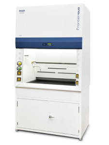

Frontier™ Duo Fume Hoods

The Esco Frontier® DuoTM Hood offers a solution representing design and engineering innovations.
General
The Esco Frontier® DuoTM Hood offers a solution representing design and engineering innovations that are at the forefront of fume hood technology. It provides superior containment of noxious chemical fumes at a face velocity of 0.5m/s while addressing worker comfort through its unique ergonomic design.
Key Benefits:
- ASHRAE 110 certified
- UL classified
- Clean looking aesthetics
- 8 degree sloped front of sash
Features
- A fully configurable SentinelTMSilver Microprocessor control with audible and visual alarms for unsafe conditions.
- Instant-start electronically ballasted lighting system (>900lux) that is flicker-free and isolated from the work zone.
- Integral fluorescent lighting mounted out of the air stream for better airflow uniformity.
- Electrical system designed to meet the latest international standards for safety.
- Internal liner is made of phenolic resin laminates with no exposed screws or metal to prevent corrosion.
- Black colored phenolic resin worktop surface resists staining.
- IsocideTM Antimicrobial coating on the cabinet prevents surface contamination and inhibits bacterial growth.
- Has a laminated vertical-rising sash with fail- safe counter-balanced mechanism
- Standard service fixtures include 1 water fixture, 1 gas fixture and 2 electrical outlets.
Accessories
Esco offers a variety of options and accessories to meet application requirements.
- Additional service fixtures and electrical outlets can be ordered.
- Fully configurable optional Esco SentinelTM Silver Microprocessor control system provides a continuous display of face velocity. The alarm system is triggered once the face velocity within the work zone fall to a low level that compromises operator safety.
- Optional motorized sash window for improved operator convenience.
- Base cabinetry is available for additional storage area in the laboratory.
- Optional distillation grids can be ordered separately for factory installation.
- Ceiling closure panels may be custom made by Esco or supplied by our local Sales Representative.
- C-frame support stand with leveling feet (SFL-_ _0).
| Model No. | External Dimensions (mm) | Internal Dimensions (mm) | Airflow Velocity (Inflow) | Airflow Velocity (Downflow) | Electrical |
| EFD-4A8 | 1200 x 793 x 1500 | 1000 x 592 x 1259 | 0.50 m/s (100 fpm) |
- | 220-240 VAC 50/60 Hz,1 ø |
| EFD-4B8 | |||||
| EFD-4A9 | 110-120 VAC 50/60 Hz,1 ø | ||||
| EFD-4B9 | |||||
| EFD-5A8 | 1500 x 793 x 1500 | 1300 x 592 x 1259 | 0.50 m/s (100 fpm) |
- | 220-240 VAC 50/60 Hz,1 ø |
| EFD-5B8 | |||||
| EFD-5A9 | 110-120 VAC 50/60 Hz,1 ø | ||||
| EFD-5B9 | |||||
| EFD-6A8 | 2400 x 793 x 1500 | 2200 x 592 x 1259 | 0.50 m/s (100 fpm) |
- | 220-240 VAC 50/60 Hz,1 ø |
| EFD-6B8 | |||||
| EFD-6A9 | 110-120 VAC 50/60 Hz,1 ø | ||||
| EFD-6B9 | |||||
| EFD-8A8 | 1800 x 793 x 1500 | 1600 x 592 x 1259 | 0.50 m/s (100 fpm) |
- | 220-240 VAC 50/60 Hz,1 ø |
| EFD-8B8 | |||||
| EFD-8A9 | 110-120 VAC 50/60 Hz,1 ø | ||||
| EFD-8B9 |